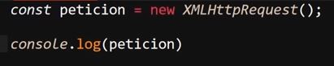
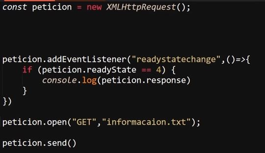
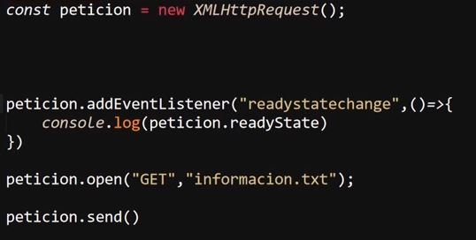
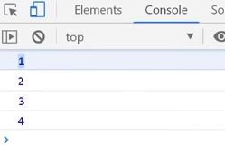
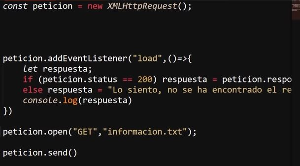
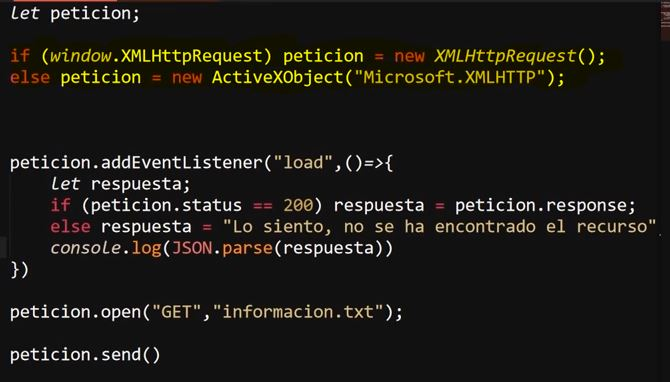
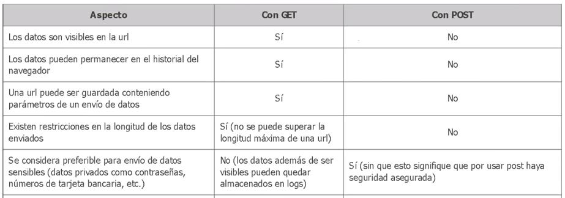
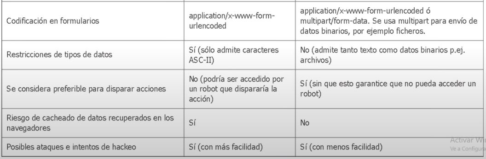
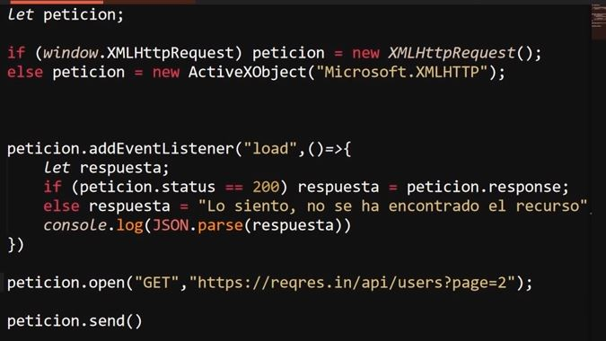
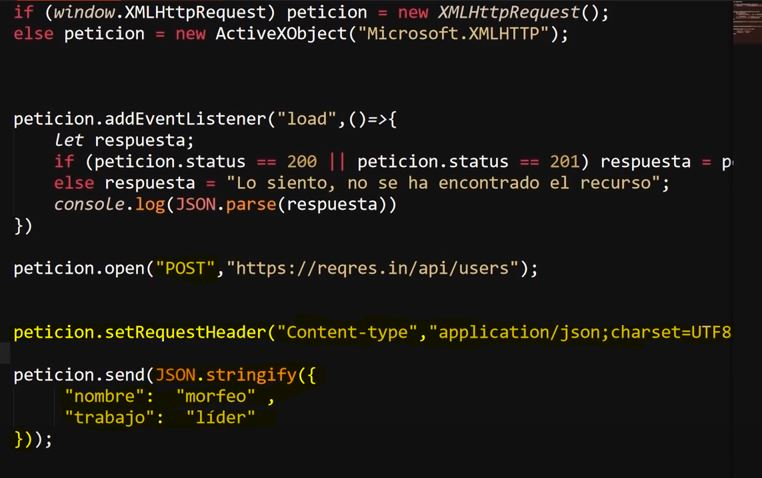

AJAX (Asynchronous JavaScript and XML)
Se trata de un conjunto de técnicas de desarrollo web que permiten que las aplicaciones web funcionen de forma asíncrona, procesando cualquier solicitud al servidor en segundo plano, por lo tanto "ajax" no es una tecnología en sí misma, sino más bien un concepto de programación, la cual permite que los sitios web carguen contenido en la pantalla sin tener que actualizar la página.
Objeto XMLHttpRequest
Se trata de un objeto nativo JavaScrip, especializado en realizar peticiones web, en otras palabras este objeto posee todos los metodos y propiedades para trabajar con las peticiones a un servidor o una base de datos.
Ejemplo

En si este objeto posee multitud de metodos y propiedades, sin embargo limitandolo a un uso basico los principales metodos son:
-
.Open: Este metodo permite crear la petición, para lo cual necesita de dos datos, el primero corresponde al metodo de envio de esta (puede ser "GET" o "POST"), mientras que el segundo dato corresponde a la dirección en la que se encuetra los datos requeridos.
-
.Send: Este metodo realiza el envio de la petición previamente elaborada con el metodo ".open" y retorna el resultado.
-
.Response: Se trata del metodo reservado para obtener el retorno de la peticón.

ReadyState
Se trata de un metodo que se utilizaba anteriormente para trbajar las peticiones, el cual se modifica segun cual sea el estado de la petición, su valor se dibide entre cinco posivilidades, entre las cuales cada uno representa una etapa de la petición:
-
0: Este se trata del valor por defecto antes del envio de la solicitud
-
1: Este valor representa la primera etapa de la solicitud, en la cual la solicitud fue creada correctamente (metodo .open)
-
2: Este segundo valor y por lo tanto segunda etapa indica que la solicitud se envio correctamente.
-
3: Este tercer valor representa la tercera solicitud en la cual la solicitud se esta procesando por el servidor o la base de datos
-
4: Este ultimo valor representa que todo el proceso de la petición concluyo, que todo a sido finalizado y ya se posee un resultado, esto sin importar si se retorna un error o el dato deseado, simplemente indica que se obtuvo un resultado sea cual sea este.
Para aprovechar este metodo el cual puede brindar información sobre la ejecución de la consulta, se utilizaba el evento "readystatechange", al cual se le puede inicializar un observador de eventos para evaluar la ejecución de cada una de las etapas, tal y como en el siguite ejemplo:
Ejemplo

Resultado

En este ejemplo cada vez que el valor de la propiedad "ReadyState" cambie se detona el evento y se registra el cambio en panalla.
Un aspecto a tener en cueta de los estados de "ReadyState" es que en sus dos ultimos valores (3 y 4) la data que esta siendo solicitada se retorna como resultado, debido a esto se recomienda realizar validaciones para comprobar el estado de la solicitud, así como su correcta ejecución.
Nota: Actualmente este metodo no es utilizado para trabajar las consultas, debido a que ha quedado en des uso debido al surgimiento de obciones más simples y eficientes.
Load
Se trata del evento que remplazo a "readystatechange" para detectar la ejecución de las peticiones JavaScrip, esto ya que este evento posee mejores mecanismos para trabajar con los errores que pueden llegar a ocurrir en las peticiones.
Ejemplo

En este ejemplo se utiliza el evento "load" para hacer seguimiento de la petición, se utiliza el metodo ".status" para comprobar el si la petición se realizo correctamente o surgio algun error, el evento "load" permite definir la respuesta que se disparara en caso de que surga un error en la petición, tal como en este ejemplo.
ActveXObject("Microsoft.XMLHTTP")
Se trata del objeto dedicado para las peticiones de internet explorer en sus verciones antiguas, su funcionamiento, metodos y propiedades son iguales, simplemente su nombre es diferente, por ello se recomienda que se realise una comprobación segun cual sea el objeto existente en el navegador antes de realizar cualquier otra acción:

En este ejemplo se mantiene la estructura de ejemplos anteriores añadiendo una validación inicial para comprobar cual es el objeto existenete en el navegador: "XMLHttpRequest"(otros navegadores) o "ActveXObject" (para internet explorer), seguido a eso se realiza la petición, se valida el si se realizo correctamente o surgio un error y de ultimo se deserealiza para poder obtener el objeto JSON con los datos.
Metodos GET y POST
Se tratan de dos de los principales metodos para el envio de datos en la web, pese a que ambos desempeñan la misma función poseen diversas diferencias entre ambos metodos, algunas de estas son:


Estas se tratan de algunas diferencias en general entre los metodos,sin embargo tambien posee ciertas diferencias practicas entre ambos:
-
Envio de Datos GET
A continuación se muestra un ejemplo de petición utilizando el metodo "GET", en si no se diferencia de los ejemplos anteriores, ya que este es el metodo más simples de los dos:

-
Envio de Datos POST
Por su parte el metodo "POST" siertamente es un poco más complejo, por lo que para su funcionamiento es necesario realizar ciertos cambios:
-
Se remplaza el metodo de "GET" a "POST" en el metodo ".open"
-
Se añade el metodo "setRequestHeader()", el cual recibe dos datos, los cuales son un conjunto de datos de tipo "nombre" valor, y corresponden al "encabezado", en este caso se usa "Content-type" y el valor de este (tipo de contenido), en este caso usado el "application/json;charset=UFT8".
En otras palabras en este caso el metodo "setRequestHeader" requiere que dentro de este se defina el tipo de contenido de la solicitud.
Nota: Realmente este metodo puede aceptar muchos otros tipos de encabezados y valores para muchos otros usos, sin embargo estos son los correspondientes para el ejemplo.
-
Se añade el dato que sera enviado dentro del metodo ".send" usando el metodo "JSON.stringify()" para serializar el objeto y adecuaarlo para su envio.

En este ejemplo se observa el como se realiza un envio de datos realizando el metodo "POST", a la vez que se imprime en consola el objeto enviado.